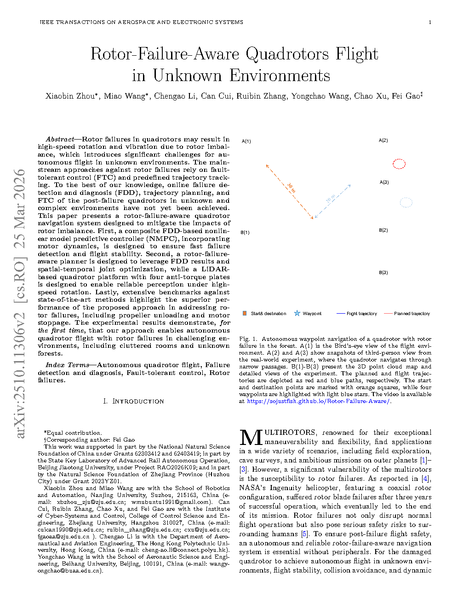
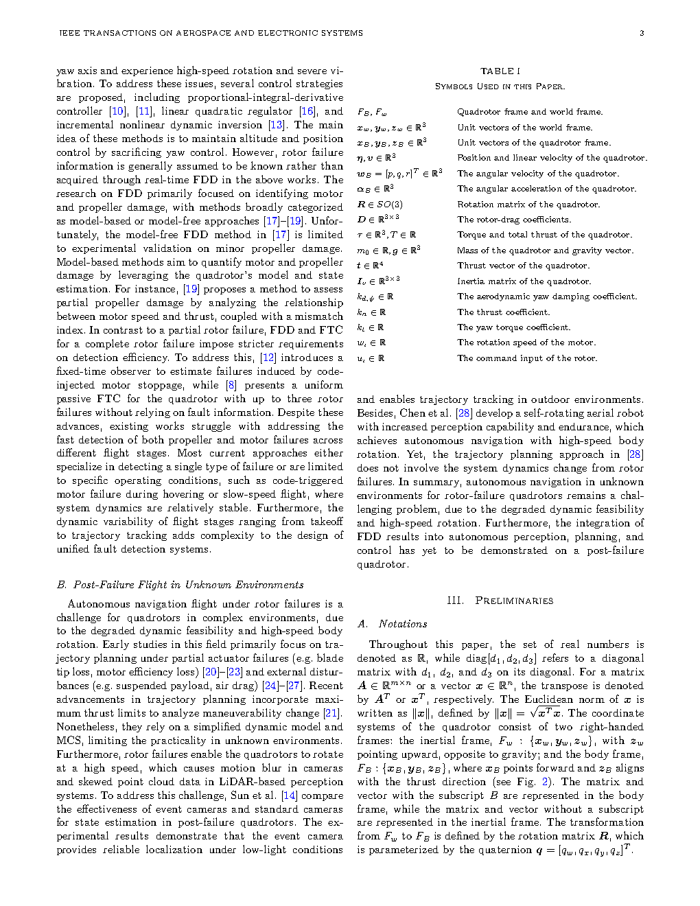
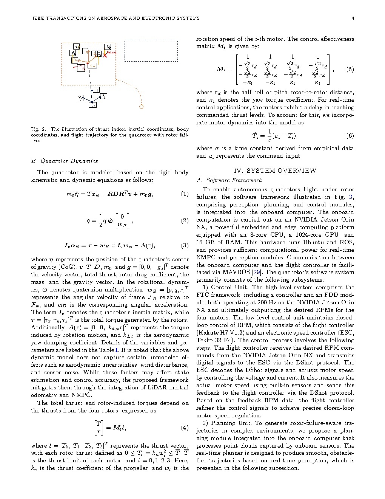

| Title | Rotor-Failure-Aware Quadrotors Flight in Unknown Environments（旋翼故障感知的四旋翼未知环境飞行） |
| Authors | Xiaobin Zhou, Miao Wang, Chengao Li, Can Cui, Ruibin Zhang, Yongchao Wang, Chao Xu, Fei Gao（corresponding） |
| Affiliation | 南京大学、浙江大学、香港理工大学、北京航空航天大学 |
| Venue | IEEE Transactions on Aerospace and Electronic Systems (TAES)，2026年 |
| DOI / Links | IEEE TAES 2026 |
| TL;DR | 首次实现旋翼故障下四旋翼在未知复杂环境中的自主飞行。核心创新：（1）复合故障检测——模型驱动+数据驱动协同实现快速旋翼故障检测与识别；（2）旋翼故障感知的规划器——时空联合优化安全轨迹；（3）专用LiDAR平台——搭载anti-torque plate抑制旋转，保证故障状态下可靠感知。在森林和杂乱室内环境中验证。 |
| Inspiration Source | → What Insight It Inspired | Type |
|---|---|---|
| Model-Based FDD（故障检测与诊断）——利用动力学残差检测故障 | → 四旋翼在旋翼故障时推力变化会立即反映在IMU加速度和角速度残差中。基于动力学模型的残差检测可以在20ms内发现异常——比数据驱动方法快一个数量级。但model-based方法对建模误差和噪声敏感，容易误报 | 方法 |
| Data-Driven FDD——用分类器从传感器信号识别故障模式 | → 训练CNN/LSTM分类器从IMU+电机转速时序中识别具体哪个旋翼故障及故障程度——鲁棒但延迟较高（~100ms）。将model-based（快速但不精确）与data-driven（慢但精确）级联：model-based做快速异常检测触发，data-driven做精确故障识别 | 架构 |
| Anti-Torque Plate（反扭矩板）——物理抑制旋转的经典气动方案 | → 单旋翼故障时，剩余旋翼的扭矩失衡导致无人机绕z轴自旋。传统方案用反馈控制抑制旋转——但故障后控制能力大幅下降。在机臂上安装air brake式anti-torque plate，用被动气动阻力抑制自旋——这是一种"机械层面的鲁棒性"，不消耗控制余量 | 硬件 |
| Spatio-Temporal Joint Optimization——轨迹规划中的时间维度 | → 标准轨迹规划只在空间域（x,y,z）优化形状——Yaw作为独立维度单独处理。故障状态下yaw不可控（自旋），需要将旋转速率作为优化变量和约束融入轨迹优化——确保规划出的轨迹（1）在空间上避障，（2）在时间上自旋速率不超过感知系统容忍上限 | 数学 |
flowchart TB
subgraph HARDWARE["硬件层：专用LiDAR平台"]
direction LR
LIDAR["LiDAR · 360°FOV · 10Hz"]
IMU["IMU · 200Hz · 加速度+角速度"]
ATP["Anti-Torque Plate · 碳纤维 · <10g"]
FC["飞控 · Pixhawk · 角速度+推力控制"]
end
subgraph FDD["故障检测与诊断层"]
direction LR
MB["Model-Based检测 · 动力学残差 · ~20ms"]
DL["Data-Driven识别 · CNN+LSTM · ~80ms"]
OUTPUT_FDD["输出: 故障旋翼编号+严重程度"]
end
subgraph PERCEPTION["感知层"]
direction LR
DEWARP["点云去畸变 · 自旋补偿"]
SLAM["LiDAR SLAM · 实时定位+建图"]
MAP["占用栅格地图 · 障碍物信息"]
end
subgraph PLANNING["规划层"]
direction LR
MODEL["故障动力学模型 · 欠驱约束"]
OPT["时空联合轨迹优化 · 自旋感知"]
LANDING["安全着陆点选择 · 自旋下降"]
end
IMU --> MB --> DL --> OUTPUT_FDD
OUTPUT_FDD --> MODEL
OUTPUT_FDD --> DEWARP
LIDAR --> DEWARP --> SLAM --> MAP
MAP --> OPT
MODEL --> OPT --> LANDING
LANDING --> FC
ATP -.->|"被动抑制自旋 <100 deg/s"| LIDAR
classDef hardware fill:#e6f7ee,stroke:#10b981,stroke-width:2px,color:#047857
classDef fdd fill:#ffe4e6,stroke:#f43f5e,stroke-width:2px,color:#be123c
classDef perception fill:#e8f0fe,stroke:#3b82f6,stroke-width:2px,color:#1d4ed8
classDef planning fill:#fef7ed,stroke:#f59e0b,stroke-width:2px,color:#92400e
class LIDAR,IMU,ATP,FC hardware
class MB,DL,OUTPUT_FDD fdd
class DEWARP,SLAM,MAP perception
class MODEL,OPT,LANDING planning
flowchart TB
subgraph SENSOR["传感器数据"]
direction LR
IMU_DATA["IMU: a(200Hz) + ω(200Hz)"]
LIDAR_DATA["LiDAR: 点云(10Hz) + 时间戳"]
MOTOR_RPM["电机: 转速(100Hz) ×4"]
end
subgraph FDD_PIPE["故障检测管线"]
direction LR
RESIDUAL["残差计算: a_meas - a_pred > thresh?"]
TRIGGER["触发: 残差超限 → 标记异常时间戳"]
CNN_LSTM["CNN+LSTM: 200ms时序窗口 → 分类"]
FDD_RESULT["结果: motor_i · partial/complete"]
end
subgraph CONTROL_ADAPT["控制自适应"]
direction LR
RECONF["重构控制分配 · 故障旋翼=0推力"]
TILT["推力矢量重分配 · 剩余旋翼补偿"]
YAW_FREE["Yaw自由旋转 · 仅控3D位置"]
end
subgraph PERCEPTION_PIPE["感知管线"]
direction LR
MOTION_COMP["运动补偿: 自旋角速度×时间戳"]
UNDISTORT["点云去畸变: 每点补偿旋转位移"]
SLAM_OUT["SLAM: 位姿估计 + 局部地图"]
end
subgraph PLAN_PIPE["规划管线"]
direction LR
REACHABLE["可到达性分析: 剩余推力裕度"]
TRAJ_OPT["轨迹优化: 位置最优 + 自旋上限约束"]
LAND_SEL["安全着陆: 平坦区域 + 充足空间"]
end
IMU_DATA --> RESIDUAL --> TRIGGER --> CNN_LSTM --> FDD_RESULT
MOTOR_RPM --> CNN_LSTM
FDD_RESULT --> RECONF --> TILT --> YAW_FREE
LIDAR_DATA --> MOTION_COMP --> UNDISTORT --> SLAM_OUT
FDD_RESULT --> MOTION_COMP
YAW_FREE --> REACHABLE
SLAM_OUT --> TRAJ_OPT
REACHABLE --> TRAJ_OPT --> LAND_SEL
LAND_SEL --> YAW_FREE
classDef sensor fill:#e6f7ee,stroke:#10b981,stroke-width:2px,color:#047857
classDef fdd fill:#ffe4e6,stroke:#f43f5e,stroke-width:2px,color:#be123c
classDef ctrl fill:#f0ebfd,stroke:#8b5cf6,stroke-width:2px,color:#6d28d9
classDef percep fill:#e8f0fe,stroke:#3b82f6,stroke-width:2px,color:#1d4ed8
classDef plan fill:#fef7ed,stroke:#f59e0b,stroke-width:2px,color:#92400e
class IMU_DATA,LIDAR_DATA,MOTOR_RPM sensor
class RESIDUAL,TRIGGER,CNN_LSTM,FDD_RESULT fdd
class RECONF,TILT,YAW_FREE ctrl
class MOTION_COMP,UNDISTORT,SLAM_OUT percep
class REACHABLE,TRAJ_OPT,LAND_SEL plan
flowchart TD
subgraph PRE_FAULT["阶段1: 正常飞行"]
direction LR
NORMAL["正常飞行 · 全驱6DOF控制"]
end
subgraph FAULT["阶段2: 故障发生"]
direction LR
FAIL["t=0ms: 旋翼i故障 · 推力骤降"]
SPIN["自旋开始 · Yaw不可控"]
end
subgraph DETECT["阶段3: 检测与诊断 (0-100ms)"]
direction LR
D1["t≈20ms: Model-Based检测触发 ⚡"]
D2["t≈100ms: CNN+LSTM识别完成 · 输出故障编号+程度"]
D3["t≈100ms: 控制器重构 · 故障旋翼推力=0"]
end
subgraph STABILIZE["阶段4: 稳定与感知恢复 (100-200ms)"]
direction LR
S1["Anti-Torque Plate抑制旋转 · <100 deg/s"]
S2["点云去畸变补偿启动 · 运动补偿参数更新"]
S3["SLAM恢复定位 · 更新局部地图"]
end
subgraph RECOVER["阶段5: 规划与安全着陆 (200ms-)"]
direction LR
R1["可到达性分析 · 最优着陆区域搜索"]
R2["时空联合轨迹优化 · 自旋约束 · 障碍物约束"]
R3["执行安全着陆轨迹 · 持续感知+重规划"]
end
NORMAL --> FAIL --> SPIN --> D1 --> D2
D2 --> D3
D3 --> S1 --> S2 --> S3
S3 --> R1 --> R2 --> R3
D3 -.->|"反馈: 更新故障参数"| S2
R3 -.->|"重规划循环: 每秒多次更新"| R2
classDef normal fill:#e6f7ee,stroke:#10b981,stroke-width:2px,color:#047857
classDef fault fill:#ffe4e6,stroke:#f43f5e,stroke-width:2px,color:#be123c
classDef detect fill:#fef7ed,stroke:#f59e0b,stroke-width:2px,color:#92400e
classDef stabilize fill:#e8f0fe,stroke:#3b82f6,stroke-width:2px,color:#1d4ed8
classDef recover fill:#f0ebfd,stroke:#8b5cf6,stroke-width:2px,color:#6d28d9
class NORMAL normal
class FAIL,SPIN fault
class D1,D2,D3 detect
class S1,S2,S3 stabilize
class R1,R2,R3 recover
| 类别 | 内容 | 维度 |
|---|---|---|
| 输入 | IMU（加速度+角速度，200Hz）+ LiDAR点云（10Hz）+ 电机转速（100Hz）+ 故障后动力学模型参数 | 多模态传感器融合 |
| 输出 | 安全着陆轨迹（3D位置+推力分配）+ 实时控制指令 | 4自由度指令（x,y,z,ψ不可控） |
| 目标 | 在旋翼故障后，于未知环境中检测故障、重构控制、安全着陆，全程无碰撞 | 故障检测时间 < 100ms，着陆成功率 |
这是一个故障容错自主飞行问题——涵盖故障检测（Fault Detection & Diagnosis, FDD）、控制重构（Control Reallocation）、故障感知规划（Fault-Aware Planning）和硬件鲁棒性设计（Anti-Torque Plate）。四旋翼旋翼故障是UAV领域最具挑战性的故障模式之一——因为传统的四旋翼在失去一个旋翼后理论上完全不可控（1个旋翼故障 → Yaw失控→ 高速自旋 → 感知崩溃 → 必然坠毁）。本文首次在"未知环境 + 完全自主 + 无需外部定位"的约束下解决此问题。场景：森林、杂乱室内等GPS拒止的未知环境。
⚠ 表头用英文，正文用中文
| Prior Method | Core Idea | Why It Fails |
|---|---|---|
| Fault-Tolerant Control (FTC) Only | 在已知故障后，重构控制分配矩阵，用剩余旋翼维持可控自由度 | 仅解决控制问题——假设环境空旷无障碍物（只需维持不掉高度）。在未知复杂环境中，FTC无法避免碰撞——因为不知道障碍物在哪里。且传统FTC假设故障已被检测——FDD本身是难题。 |
| Emergency Landing by Pre-Planned Path | 预计算故障后从任意点到安全着陆点的路径，故障发生时执行 | 依赖预先已知的环境地图——在未知环境中无效。且预计算的路径假设特定的故障模式和初始状态——实际故障参数（哪个旋翼、故障程度）千差万别，预计算无法覆盖。 |
| Rotor-Failure Planning in Known Environments | 已知环境中，用故障后动力学约束规划从故障点到着陆点的轨迹 | 需要先验地图和外部定位（如Vicon）——这在真实未知环境中不存在。且假设在故障过程中感知系统正常工作——实际上自旋已经破坏了感知。 |
| Data-Driven FDD Only（纯数据驱动故障检测） | 用深度学习从传感器数据中检测和分类旋翼故障 | 检测延迟通常在100-500ms——在高速自旋中这段时间足以让无人机转N圈并大幅偏离原轨迹。纯数据驱动方法的速度不足以应对旋翼故障的实时性要求。 |
系统的核心由三个关键算法构成：（1）复合FDD——model-based残差检测 + CNN-LSTM故障分类的级联架构；（2）故障后动力学建模——建立欠驱系统的运动方程；（3）旋翼故障感知时空轨迹优化——在自旋速率约束下优化安全着陆轨迹。
LaTeX rendered by MathJax. 显示公式用 $$...$$，行内公式用 $...$。⚠ 符号解释请用中文。
| 参数 | 取值 | 含义 | 为什么取这个值 |
|---|---|---|---|
| Model-Based检测延迟 | ~20 ms | 从故障发生到残差超限触发 | IMU采样率200Hz → 每5ms一个读数。残差计算仅需最近3-4个读数的滑动平均 → 20ms足够可靠判断 |
| CNN+LSTM识别延迟 | ~80 ms | 从触发到分类完成 | 200ms时序窗口输入 CNN+LSTM——足够捕捉故障前后动力学变化模式，但最短也受限于窗口长度 |
| Anti-Torque Plate 减旋效果 | 500→100 deg/s | 故障后自旋速率 | 将自旋速率降低到LiDAR 100ms扫描周期内仅转~10度——点云去畸变算法可轻松补偿。更低的旋转也意味着更小的离心力对IMU的干扰 |
| 自旋感知上限 $\omega_{\max}$ | ~100 deg/s | 轨迹优化中允许的最大自旋速率 | 由感知系统测试决定——超过此值，LiDAR点云去畸变后的残差误差超过SLAM可承受范围 |
| 轨迹重规划频率 | ~10 Hz | 每秒重新优化轨迹的次数 | 与LiDAR帧率匹配——每次新点云 → 更新地图 → 重规划。更高频率意义不大（地图没有新信息） |
| 着陆点搜索半径 | ~15 m | 在当前位姿周围搜索安全着陆区域 | 由故障后剩余推力裕度决定——更大的搜索范围意味着更远的飞行距离，需要更多剩余能量/高度 |
理解本文需要掌握三个关键基础原理：故障后欠驱动力学（为什么推力不对称导致自旋不可控）、自旋补偿点云去畸变（如何让旋转中的LiDAR仍然可用）、时空联合轨迹优化（如何在自旋约束下找安全路径）。
为什么放弃Yaw而非其他自由度？位置控制（x,y,z）是安全着陆的基础——如果不能控制位置，无人机将撞上障碍物或坠落。Roll/Pitch控制是维持推力方向所必需的——没有姿态控制，推力方向不受控。Yaw（偏航）仅决定机头朝向——对于着陆任务，机头朝向无关紧要（只要能落在安全区域即可）。因此，故障后的控制策略是：牺牲Yaw，保位置和Roll/Pitch——无人机持续自旋但轨迹可控。
Anti-Torque Plate的真正价值：不仅在于降低自旋速率本身，更在于让自旋速率变得稳定和可预测——如果没有它，自旋速率会随推力分配变化而剧烈波动（从200到600 deg/s随机变化），去畸变算法无法用简单的线性模型补偿。有了它，自旋速率被物理稳定在~100 deg/s左右——用简单的常角速度假设就能很好地补偿。
📷 论文原图截图。图片保存至 figures/ 子目录。命名 fig1.png ~ fig4.png 即可自动显示。

📷 请将截图保存为figures/fig1.png本图展示了：从正常飞行 → 旋翼故障 → 检测诊断 → 控制重构 → 安全着陆的完整系统概览。左侧展示专用硬件平台（LiDAR + Anti-Torque Plate），中间展示复合FDD的双级架构（model-based + data-driven），右侧展示故障后轨迹优化和安全着陆的结果可视化。

📷 请将截图保存为figures/fig2.png本图展示了：在两种极端环境（茂密森林和杂乱室内）中的真实故障飞行实验结果。包括故障时刻的3D轨迹、LiDAR建图结果、着陆点选择可视化。

📷 请将截图保存为figures/fig3.png本图展示了：逐组件移除实验，分析每个模块对系统整体性能的影响。
| 数据问题 | 潜在困难 | 严重程度 |
|---|---|---|
| IMU噪声与偏置漂移 | Model-Based检测依赖精确的加速度预测——IMU偏置（尤其是故障伴随的剧烈振动）会导致残差异常增大，误报风险上升。同时运动补偿的角速度积分误差也会累积 | ★★★★ |
| LiDAR在尘土/烟雾中的退化 | 故障可能导致旋翼撞击障碍物产生尘土/碎片——LiDAR在这种条件下的点云充满噪点，SLAM可能失效。本文未测试此类场景 | ★★★★ |
| Partial Failure的模糊性 | 旋翼性能下降30% vs 气流瞬时扰动的区分非常困难——残差幅度相似但含义完全不同。CNN+LSTM在partial failure上的训练数据也较难生成（需要精确建模退化的物理过程） | ★★★ |
| 不同机型/尺寸的泛化 | 动力学模型、Anti-Torque Plate参数、CNN+LSTM都是针对特定机型设计的——更换机型需要重新校准/训练。这限制了系统的"即插即用"能力 | ★★★ |
| 参考文献 | 为什么重要 |
|---|---|
| Mueller & D'Andrea (2014) — Stability and control of a quadrocopter despite the complete loss of one, two, or three propellers. IEEE ICRA | 首次在理论上证明四旋翼单旋翼完全失效后仍可通过高速自旋保持可控——是本文控制重构的理论基础。该工作在Vicon环境中验证，本文将其推进到未知环境中的自主飞行。 |
| Sun et al. (2020) — A Review of Fault Detection and Diagnosis for Quadrotors. IEEE Trans. Instrum. Meas. | 四旋翼FDD领域的综述——系统梳理了model-based、signal-based、data-driven三类方法。本文的复合FDD正是这三种方法的混合使用。 |
| Zhang et al. (2016) — LOAM: Lidar Odometry and Mapping in Real-time. RSS | LiDAR SLAM的里程碑工作——本文的自旋去畸变和SLAM模块基于类似的点云配准框架，但在故障自旋的特殊条件下进行了运动补偿增强。 |
| Zhou et al. (2019) — Robust and Efficient Quadrotor Trajectory Generation. IEEE TRO | 四旋翼轨迹优化的经典工作——本文的轨迹优化器在其框架上加入了故障动力学约束和自旋速率约束，展示了如何将通用优化框架适配到特殊故障场景。 |